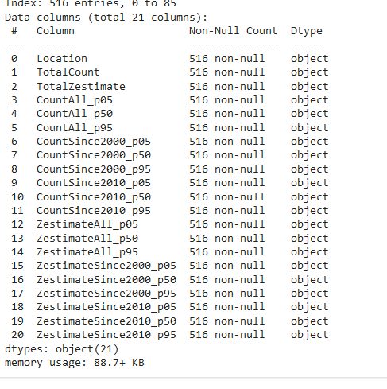

Data Source & Wrangling
- Exploratory Data Analysis performed to understand the data, and implement the neccesary data Wrangling strategies.
- Data From Risk Finder
were used. This data contained information on houses at risk in Galveston County due to Sea level rise and Storm Surge.
- Data contained 516 observations and 21 features
- After data Wrangling process, 516 observations and 19 features were used for the model.
Information on Data (df.info())
